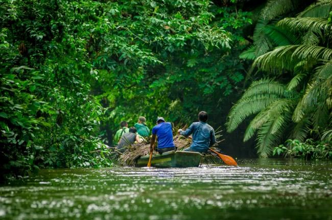

¿Sabías que el lugar con mayor biodiversidad del mundo se encuentra en Ecuador? Se trata de un rincón de la amazonia llamado El Parque Nacional Yasuní.
El próximo 20 de agosto, Ecuador enfrenta una decisión histórica que podría marcar un hito en la protección del medio ambiente y la preservación de uno de los tesoros más preciados de la Tierra. En este día, los ciudadanos ecuatorianos tienen en sus manos la oportunidad de votar por la salvaguardia del Parque Nacional Yasuní.
La importancia de Yasuní trasciende las fronteras de Ecuador y resuena en la conciencia global. Este santuario ecológico alberga una abundancia de vida silvestre que desafía los límites de nuestra comprensión. El valor de Yasuní no radica únicamente en su biodiversidad, sino también en la coexistencia armoniosa entre la naturaleza y los pueblos indígenas que lo habitan.
La elección que se presenta a los ecuatorianos es crucial: optar por mantener el petróleo bajo tierra y proteger este entorno invaluable, o ceder ante la ilusión de riqueza momentánea que podría tener un costo insostenible en términos ambientales y culturales. Las compañías petroleras han dejado una historia de contaminación y explotación en la Amazonía, dejando claro que su enfoque está lejos de ser sostenible.
El mito de que la explotación petrolera generará prosperidad para el país se responde con la experiencia que ha demostrado que los beneficios económicos rara vez llegan a las comunidades afectadas y, en cambio, se concentran en manos de una pequeña cantidad. Muy poco de este dinero retorna a la Amazonía, donde la riqueza de la biodiversidad y la cultura es incalculable.
Además, el Parque Nacional Yasuní alberga a algunos de los últimos pueblos en aislamiento voluntario en el mundo. Su decisión de evitar el contacto con el mundo exterior es un testimonio de su profundo entendimiento de la importancia de la conexión con la tierra. El riesgo de la explotación petrolera cerca de su hogar pone en peligro su forma de vida y su identidad.
Esta elección es la oportunidad para forjar un futuro basado en la verdadera riqueza: la biodiversidad y la sostenibilidad. En un mundo donde la degradación ambiental y la pérdida de biodiversidad son preocupaciones urgentes, la protección de Yasuní sería un testimonio poderoso de la responsabilidad que todos compartimos en la conservación de nuestro planeta.
La decisión que se tome no solo influirá en el futuro del país, sino que también enviará un mensaje a nivel global, demostrando que la verdadera riqueza radica en la preservación de la naturaleza y la herencia cultural. Es un llamado a unirnos en defensa de Yasuní, en defensa de la vida y en defensa de un futuro sostenible para todos.